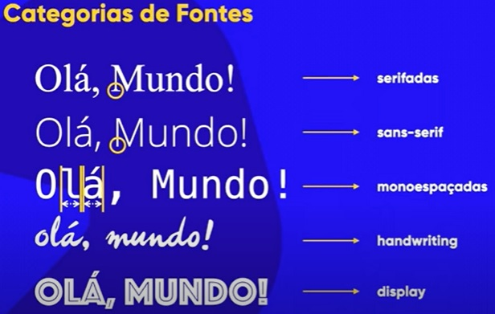

A Tipografia, resumidamente são as letras que foram e são desenvolvidas com o objetivo de serem comodas ao olhar e mais fáceis de se ler, mais legíveis e dizem por ai que a forma de ler algo traz emoções eu não tenho habido de ler então não sei mas o conhecimento está ai O que você deve levar disso é que assim como certas cores combinam melhor com certas situações, certas letras (fontes) também combinam melhor com certas situações
Anatomia de um Tipo
Toda fonte quando é desenvolvida o Tamanho de suas letras é sempre considerado, quem desenvolve a Fonte deve fazer tais medidas e quem for utilizar tal fonte deve saber se as medidas dela encaixam simetricamente com os conteudos do seu projeto mas como essas medidas são tiradas? A letra x minuscula é a letra usada como ponto de partida para o desenvolvimento de fontes, isso aconteçe por causa da "altura x" que basicamente sera o tamanho padrão de todas as letras minusculas que a fonte vai ter(sem seus ascendentes, que é o nome dado aos espaços de vazão de letras para cima e descendentes, que é o nome dado aos espaços de vazão das letras para baixo), e enquanto as letras maiusculas, estas tem sua propria metrica de altura, no caso a altura das maiusculas e o total de todas estas medidas se chama corpo, e sera a altura do corpo que sera configurada na CSS
Serifas
Algumas fontes podem possuir em suas letras "pequenas protuberancias" sabe como extenções, "pernas" e estas coisas são chamadas de Serfia(s)e disem que essas serifas facilitam a leitura porque o nosso cerebro cria uma linha imaginaria usando essas serifas (que em um texto estariam presentes e varias letras tanto na parte de cima quanto embaixo) enfim é o que disem por ai serifas ajudam mais em conteudo impresso em papel
Geometria do Tipo
Acima nós temos uma ilustração das Formas Geométricas que um Tipo(s) pode ter vamos descrevelas da esquerda para a direita
vértice = Forma que pareçe um "chapeu"
haste = Forma que é reta independente do grau
filete = Forma que é uma haste deitada e une duas hastes ou uma ou mais hastes e arcos
arco = Forma que pareçe um arco ou uma barriga pra cima
esporão = Forma que pareçe um salto, sustena o tipo (algumas fontes não possuem)
terminal = Forma que não esta conectada a outra Forma
Agora com essa imagem das Formas de Corpo, vamos descrevelas da direita para esquerda
olho = Forma caracterizada por ser um vazio completamente cercado
cauda = Forma caracterizada por ser uma apêndice do corpo de algumas letras, que fica abaido da altura-x
espinha = Forma caracterizada por ser uma curza que é de um lado e do outro, forma estruturante da letra S
pé = Forma caracterizada por ser a base que sustenta um tipo (algumas letras podem possuir serifas no pé outras não)
perna = Forma caracterizada por ser um elemento que sai de uma haste ou braço vai para baixo
braço = Forma caracterizada por ser um elemento que sai de uma haste e vai para cima
orelha = Forma caracterizada por ser uma apêndice, presente na letra g e pode ter a forma de gota, botão, bandeira ou gancho
barriga = Forma caracterizada por ser uma união entre dois arcos
BONUS enlace = Forma caracterizada por ser como uma haste, linha ou filete que se liga a um arremate, uma serifa ou um terminal, podendo ser angular ou curvilíneo
Resumo
Letras, sejam elas maiúsculas ou minúsculas são Glifos (Cracteres) o conjunto de todos esses glifos é uma Fonte; Familias tipograficas (Variações) é quando uma Fonte possui seus Glifos em diferentes formatos como "A light A normal A Seminegrito A negrito A extranegrito" e esse conjunto de caracteres, existem para ser utilizados em diferentes situações
Categoria de Fontes
Você deve ter imaginado que se existem fontes que podem ter caracteres para diferentes usos também se tem as categorias das fontes, essas categorias servem para ideitificar qual é o tipo de fonte e pra que ela serve or não veja abaixo
Fonte serifada Aqui se ideitifica toda fonte que faz o uso das serifas
Fonte sem serifa Aqui se ideitifica toda fonte que não faz uso da serifa
Fonte monoespaçada Aqui se ideitifica toda fonte onde seus glifos possuam as mesmas proporções de largura. esse tipo de fonte pode ou não fazer uso de serifas
Fonte de scriptada Aqui se ideitifica toda fonte que possui glifos que simulam a caligrafia humana (escrita a mão)
Fonte Display(Comemorativa) Aqui se ideitifica fontes que não possuem nenhuma caracteristica de outras fontes, são as fontes nada a ver
Conclusão
O que você deve ter em mente sobre as fontes é que CADA FONTE POSSUI UM PROPÓSITO, CADA UMA VAI SER ÚTIL PARA ALGUMA COISA E NO NOSSO CASO NÓS ESCOLHEMOS UMA FONTE PARA UM PROJETO COM O OBJETIVO DE COMBINALA SIMETRICAMENTE COM A IDEITIDADE DO PROJETO, BUSCAMOS A COMODIDADE DE LEITURATextos longos sempre teram as cores branca de fundo e preta (essas cores são contrastantes sempre usaremos o maior contraste possivel para textos) na fonte porque é assim que as coisas sãotambém se recomenda para textos longos impressos em tela(textos digitais) fontes não serifadas que possuam um espaçamento adequado(nada de espaçamento curto)